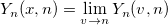
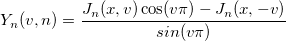

This function returns the nth order Bessel function of the second kind and has the following form:
Yn(x, n)
The formula for the equation is:

where

double yn(double x, int n)
x
n
Returns the nth order Bessel function of second kind at x.
aa = yn(5,3); aa = ; //0.14626716269319